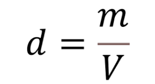

Studio delle Proprietà Fisiche e Meccaniche dell'Acqua
1. Introduzione: La Definizione Meccanica di Densità
Dal punto di vista della fisica dei fluidi, la densità è una proprietà intensiva fondamentale della materia. Essa esprime il rapporto quantitativo tra la massa di un corpo e il volume da esso occupato, definendo in modo rigoroso quanto la materia sia "addensata" all'interno di uno spazio geometrico.
La formula matematica che governa questo principio è:
Equazione Fondamentale: Densità (ρ) = Massa (m) / Volume (V).
Unità di Misura SI: Chilogrammo al metro cubo (kg/m³), espressa comunemente anche in g/cm³.
Proprietà Intensiva: Il valore non dipende dalla quantità di materia totale considerata.

2. Tappa 1: Il Comportamento Termico e la Densità Anomala
La quasi totalità delle sostanze in natura si contrae al diminuire della temperatura, aumentando progressivamente la propria densità. L'acqua, tuttavia, manifesta una singolarità termodinamica unica nota come "comportamento anomalo", causata dalla geometria dei suoi legami a idrogeno.
Il Punto di Inversione Fisiopolare
Picco di Densità: Raggiunto esattamente alla temperatura di 4 gradi Celsius (circa 1000 kg/m³).
Fase di Raffreddamento (da 4°C a 0°C): L'acqua si espande progressivamente. Il volume aumenta e la densità diminuisce.
Fase di Riscaldamento (oltre i 4°C): L'aumento dell'agitazione termica allontana le molecole. Il volume aumenta e la densità diminuisce.
Il Paradosso del Ghiaccio: Al momento del congelamento (0°C), le molecole d'acqua si bloccano in un reticolo cristallino esagonale rigido e spazioso. Questa configurazione geometrica fissa lascia ampi spazi vuoti tra le molecole. Di conseguenza, il ghiaccio solido presenta un volume maggiore rispetto allo stesso quantitativo di acqua liquida, determinando il suo galleggiamento dovuto alla spinta idrostatica di Archimede.

3. Tappa 2: L'Impatto Ecologico della Densità Anomala
Se l'acqua si comportasse come gli altri fluidi, i laghi e gli oceani congelerebbero partendo dal fondo, trasformandosi in blocchi di ghiaccio solido impossibili da sciogliere. La densità anomala funge invece da scudo protettivo per l'intera biosfera acquatica durante i periodi invernali.
La stratificazione termica avviene secondo tre passaggi dinamici:
Galleggiamento superficiale: Lo strato di ghiaccio meno denso si posiziona sulla superficie dello specchio d'acqua.
Isolamento termico: La crosta solida isola l'acqua sottostante dalle rigide temperature atmosferiche esterne.
Oasi biologica profonda: Sul fondo l'acqua mantiene la temperatura stabile di 4°C, densità massima che preserva la vita sottomarina.

4. Tappa 3: L'Acqua come Volano Termodinamico
Oltre alla densità, l'acqua possiede un'altra proprietà fisica straordinaria che influenza il clima globale e gli organismi viventi: un altissimo calore specifico. Questa caratteristica permette alle grandi masse idriche di comportarsi come giganteschi accumulatori e distributori di energia termica.
Analisi delle Proprietà Calorimetriche
Definizione di Calore Specifico: Quantità di calore necessaria per elevare di 1°C la temperatura di 1 grammo di sostanza.
Valore Energetico dell'Acqua: Pari a 1 cal/g°C (4186 J/kg·K), uno dei valori più alti tra tutte le sostanze chimiche note.
Funzione di Serbatoio Termico: Durante l'estate assorbe calore senza surriscaldarsi; d'inverno lo rilascia lentamente mitigando l'ambiente.
Nota tecnica: L'alto calore specifico è dovuto alla necessità di rompere i legami a idrogeno prima di poter aumentare l'energia cinetica delle molecole.